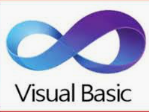

Experiencia Profesional
Desarrolladora - Practia Global
Agosto 2023 - Presente
- Desarrollo con Angular.
- Manipulación de datos con DML en Oracle.
 Angular
Angular
 Oracle
Oracle
Programadora - Accusys
2021-2023
- Desarrollé y mantuve aplicaciones COBIS (sistema para gestionar entidades financieras).
- Implemente nuevas funcionalidades y corregí errores en aplicaciones existentes.
- Trabaje en equipo con otros desarrolladores para completar proyectos a tiempo y dentro del presupuesto.
- Optimización de algoritmos de procesos, mejorando la eficiencia y rendimiento del software.
- Implementación de soluciones de software, siguiendo metodologías agiles y buenas prácticas.
 C#
C#
 SQL Sybase
SQL Sybase
 .Net
VB6
.Net
VB6
Desarrolladora - Ministerio De Justicia y Seguridad
2017-2021
- Desarrolle informes y estadísticas.
- Implemente nuevos paneles y análisis de datos.
- Trabaje en colaboración con análisis de datos para obtener información valiosa de los datos.
- Realización de pruebas de funcionamiento de aplicaciones.
 SQL Server
SQL Server
 Power BI
Visual Analytics SAS
VB6
Power BI
Visual Analytics SAS
VB6
Help Desk - Software América
2014-2017
- Resolución de problemas y atención a incidencias.
- Uso de sistemas informáticos y tecnológicos.
- Trabajo en equipo para facilitar el cumplimiento de objetivos.
SQL Server

Crystal Report
VB6